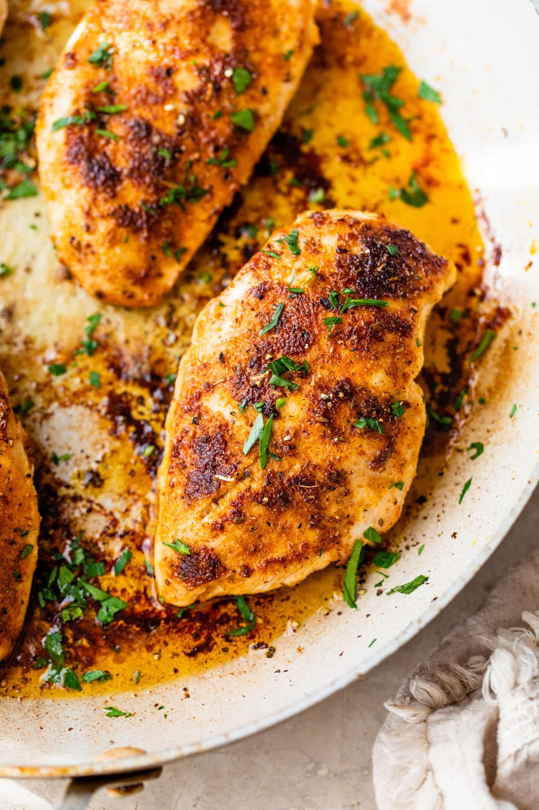

Pan Fried Chicken Breast Recipe
Home

Description
Pan-Fried Chicken Breast is a simple and hearty dish made by seasoning chicken breasts and cooking them until golden brown and juicy.
It’s quick to prepare, versatile, and pairs well with rice, vegetables, or sauces for an easy and satisfying meal.
Ingredients
- 2 chicken breasts (boneless, skinless)
- Salt and pepper (to taste)
- 1–2 tablespoons cooking oil or butter
- 2 cloves garlic (optional, minced)
- Optional seasonings: paprika, garlic powder, or dried herbs
Steps
- Pat the chicken breasts dry with paper towels.
- Season both sides with salt, pepper, and any optional seasonings.
- SHeat oil or butter in a pan over medium heat.
- Place the chicken breasts in the pan and cook for about 5–7 minutes per side, or until golden brown and fully cooked.
- (Optional) Add minced garlic during the last minute and sauté briefly until fragrant.
- Remove from the pan and let rest for a few minutes before serving.
Home